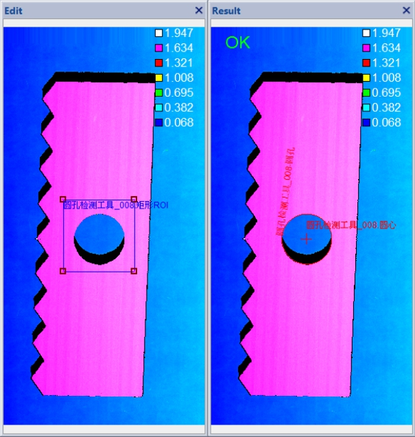

在3D测量中，圆孔检测工具主要是检测深度数据图像中指定ROI区域内，是否存在满足半径约束和位置需求的圆孔，以协助进行测量或者定位。图1所示为一个满足半径约束的圆孔检测结果。

| 分类 | 参数名称 | 参数描述 |
|---|---|---|
| 属性窗口 | 标称半径 | 圆孔的预期半径。 |
| 半径偏差 | 相对于标称半径的最大偏差（偏差值为正数），可表示比标准圆半径偏小或偏大的圆。 |
|
| 启用矩形ROI | 选择“是”，则使用矩形ROI检测区域，否则全图检测。 | |
| 平面度阈值 | 深度数据相对所在平面最大偏移与最小偏移的差值，平面度阈值将决定哪些边缘点同属一个平面上。该阈值为正数，且越小，参与计算的边缘点越少，默认值为0.08mm。 |
|
| 圆拟合RMS误差阈值 | 检测圆孔过程中对圆孔检测结果的约束条件，即将剔除RMS误差高于该阈值的检测结果，默认值为0.15。 | |
| 启用深度限制 | 选择“是”，则显示深度阈值参数。 | |
| 深度阈值 | 检测圆孔过程中对深度数据的深度约束条件，即将排除低于该深度阈值的深度数据。该约束为可选约束，仅在启用深度限制为是时有效。 | |
| 启用参考平面区域 | 选择“是”，则参数链中显示参考平面参数。指定圆孔所在的平面，即检测的圆孔与参考平面在相同平面上。 | |
| 检测结果分组号 | 检测结果会被分成不同组的同心圆。 | |
| 检测结果类型 | 分为4种，最外侧圆、最内侧圆、最优圆、最标准圆。 |
|
| 图像窗口 | 深度图像 | 显示待检测的深度图像，显示为伪彩色图像。 |
| 检测区域 | 属性窗口启用矩形ROI参数为是时，在图像上显示ROI区域。 | |
| 数据链 | 输入深度图像 | 输入待检测的深度图像。 |
| 二维线性变换 | 目标相对于模板的平移、旋转、缩放变换。 | |
| 参考平面 | 属性窗口启用参考平面区域参数为是时，参数链显示参考平面参数，该参数来源是平面拟合工具。 | |
| 高级界面 | 无 | 无 |
| 分类 | 参数名称 | 参数描述 |
|---|---|---|
| 监视窗口 | 输入深度图像 | 输入图像的长宽和像素大小，以及深度数据参数。 |
| RMS误差 | 对应检测结果的RMS误差。 | |
| 圆孔半径 | 对应检测结果的半径。 | |
| 圆的完整度 | 对应检测结果的完整度。 | |
| 圆心坐标 | 对应检测结果圆心的三维坐标信息。 | |
| 圆所在平面法向量 | 对应检测结果所在平面法向量。 | |
| 执行结果 | 工具执行结果。 | |
| 执行时间 | 工具执行时间。 | |
| 图像窗口 | 输入深度图像 | 显示检测的深度图像，显示为伪彩色图像。 |
| 圆孔 | 显示检测结果圆孔及其中心。 | |
| 数据链 | 同监视窗口参数，供后续工具使用。 |
Step 1 设置标称半径和半径偏差
这里需要用户输入检测的圆孔半径和偏差，设置的越精确，检测结果越准确。圆孔的主要参数及其标称半径、半径偏差如图2所示。
Step 2 设置检测区域
默认情况下，圆孔检测执行的是全图检测，为了提高效率和精度，用户可以设置合适的矩形ROI区域。
Step 3 设置高级参数
高级参数主要包括：平面度阈值、圆拟合RMS误差阈值、深度限制阈值以及参考平面。在需要更高检测精度时，用户可根据需求对这些参数进行适当设置。
Step 4 执行检测和输出结果
在设置好参数后就可以执行圆孔检测，输出的结果包括：RMS误差、圆孔半径、圆心坐标，以及圆所在平面法向量。这里可以选择不同的“检测结果分组号”和“检测结果类型”来查看不同的检测结果。
检测结果类型包括以下4种：
最外侧圆：检测结果中，同组圆（忽略高度）中最外侧的圆，即同组圆中Z值最大的圆。
最内侧圆：检测结果中，同组圆（忽略高度）中最内侧的圆，即同组圆中Z值最小的圆。
最优圆： 检测结果中，拟合RMS误差最小的圆。
最标准圆：检测结果中，半径最接近标称半径的圆。
| 序号 | 参数 | 应用场景 | 调整建议与说明 |
|---|---|---|---|
| 1 | 平面度阈值 | 需提高检测结果精度 | (1) 对于平行于XOY平面的待检测圆孔，点云数据质量较好的图像，适当降低平面度阈值可提高检测精度，以及拟合圆的边缘点在同一平面的可信度； (2) 对于有一定倾斜的圆孔，可适当提高平面度阈值，以增加用于圆拟合的边缘点数目，提高检测倾斜圆孔结果的稳定性； (3) 需注意平面度阈值不能过小，否则会导致圆孔不能通过有效性验证。 |
| 2 | 圆拟合RMS误差阈值 | 需提高检测结果精度 | (1) 对于圆孔边缘较为平滑的图像，可适当降低阈值，以排除不理想的圆孔； (2) 对于圆孔边缘不平滑、干扰点较多、突变较大的图像，即边缘不是理想圆的情况，可适当增大阈值，以提高检测非理想圆的稳定性； (3) 需注意圆拟合RMS误差阈值不能过小，否则会减少圆孔检测结果； |
| 3 | 深度限制 | 复杂背景图像或需增强圆孔深度约束 | (1) 通过恰当的深度约束，可排除深度不符合需求的非圆孔边缘点，提高检测效率和准确性； (2) 深度限制不宜过大，否则不能起到深度约束作用； |
| 4 | 参考平面 | 复杂背景图像或需增强圆孔所在平面约束 | (1) 通过约束圆孔所在平面，结合平面度，可排除不在平面上的非圆孔边缘点，提高检测效率和准确性；(2) 这里参考平面可通过平面拟合工具给出； |
无
参见“\Samples\3D\深度图\3D测量工具.gvp”。